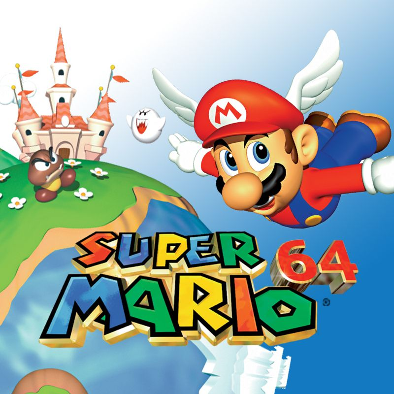

Super Mario 64
Description
A true pioneer of 3D platforming, Super Mario 64 launched alongside the Nintendo 64 in 1996 and redefined what video games could be. With its open-ended level design, fluid controls, and vibrant worlds, the game invited players to explore Princess Peach's castle and collect Power Stars across a variety of imaginative stages. From sliding down icy slopes to soaring through the skies with a winged cap, Super Mario 64 captured the joy of movement like no game before it—and it's still just as fun today.
Did you know?
It was one of the first games to use full analog stick movement — and the castle hub world became iconic.